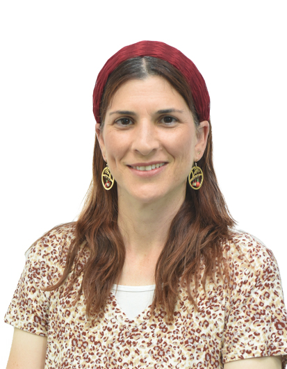
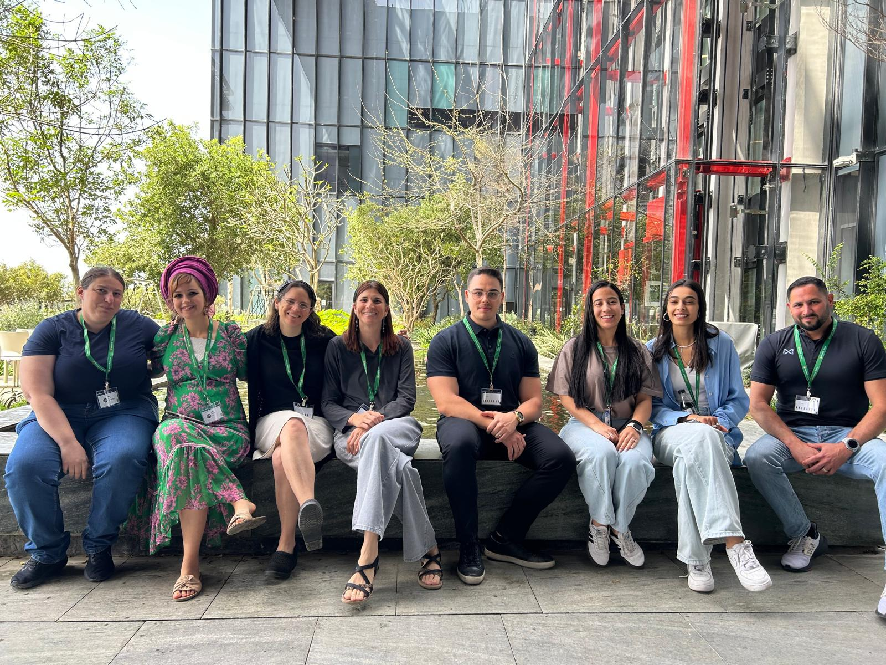

Decoding Biology Through Data
We develop and apply computational methods to uncover the molecular mechanisms underlying cancer, epigenetics, reproductive health, and infectious disease - turning large-scale genomic data into biological insight.

Prof. Mali Salmon-Divon
Principal Investigator & Full Professor
Our lab develops novel computational algorithms and bioinformatics approaches to understand disease at the molecular level. Many of our projects are carried out in close collaboration with leading experimental and clinical groups.
Identifying molecular subtypes, biomarkers, and therapeutic targets in breast cancer, medulloblastoma, lymphoma, and AL amyloidosis using RNA-seq, microRNA, and multi-omics approaches.
Investigating RNA modifications (m6A, m1A) and chromatin organization - heterochromatin, nuclear lamina, DNA methylation - and their roles in gene regulation, development, and disease.
Applying bioinformatics and statistical modeling to fertility data - sperm parameters, IVF outcomes, and ovulation biology - in collaboration with leading reproductive medicine clinics.
Comparative genomics and transcriptomics of bacterial pathogens including Brucella, E. coli ST131, and Salmonella to understand virulence mechanisms and antibiotic resistance.
Developing machine learning models for clinical risk prediction, patient stratification, and drug response prediction from routine health records and genomic data.
Building open-source computational tools: PeakAnalyzer (chromatin annotation), VennBLAST (transcriptome comparison), CircosVCF (whole-genome variant visualization), and Benford-based tissue classifiers.
100+ peer-reviewed articles including publications in Nature, Science, EMBO Journal, and other high-impact journals. H-index 33 (Google Scholar).
A computational biology lab specializing in bioinformatics, genomics, and data science.
Principal Investigator | Full Professor
Dept. of Molecular Biology
Head of Medical Sciences Program, School of Biomedical Sciences, Adelson Faculty of Medicine
✉ malisa@ariel.ac.il
📍 Ariel University, Ariel, Israel
🎓 Ph.D., Bar-Ilan University (2005)
🔬 Post-doc: EMBL-EBI, Cambridge (2007-2010)
Current lab members pursuing advanced degrees in computational biology and bioinformatics.
Epigenetic signature of depression
w/ Dr. Elad Lax
Evolution of HIV
w/ Prof. Shai Ashkenazi
COVID-19 in pregnancy & neurodevelopmental outcomes
w/ Dr. Elad Lax
Former lab members who have completed their degrees.
Ph.D. 2025 - Cancer genomics & transcriptomics
Ph.D. 2025 - Breast cancer genomics
Ph.D. 2024 - Cancer drug resistance genomics
M.Sc. 2024 - Breast cancer microbiome
M.Sc. 2024 - Reproductive medicine informatics
Ph.D. 2023 - Chromatin organization & cell migration
M.Sc. 2021 - Marine microbiome & plastisphere
Ph.D. 2021 - Bacterial plasmid evolution & AMR
M.Sc. 2021 - Chromatin biology
Ph.D. 2019 - Medulloblastoma genomics
Ph.D. 2019 - Genomics of rare diseases
M.Sc. 2019 - Benford's Law in genomics
M.Sc. 2018 - Bioinformatics
M.Sc. 2017 - Chromatin & cell migration
M.Sc. 2017 - Computational biology

Courses spanning undergraduate, graduate, pre-med, and medical education - bringing computational thinking to life science students at Ariel University.
Foundations of sequence analysis, genome annotation, and computational tools for biological data.
UndergraduateNext-generation sequencing data analysis: RNA-seq, ChIP-seq, variant calling pipelines.
GraduateStructure and function of the human genome, genetic variation, GWAS, and personalized medicine.
UndergraduateStatistical computing and visualization with R for biological data analysis.
UndergraduateApplied computational analysis of clinical and genomic datasets for medical students.
Medical SchoolFoundational programming for pre-medical students entering data-rich medical practice.
Pre-MedWe welcome applications from motivated M.Sc. and Ph.D. students, postdoctoral researchers, and research collaborators. If you are passionate about computational biology, genomics, or AI in medicine - we want to hear from you.
We are recruiting highly motivated students and postdocs interested in bioinformatics, cancer genomics, and computational medicine.